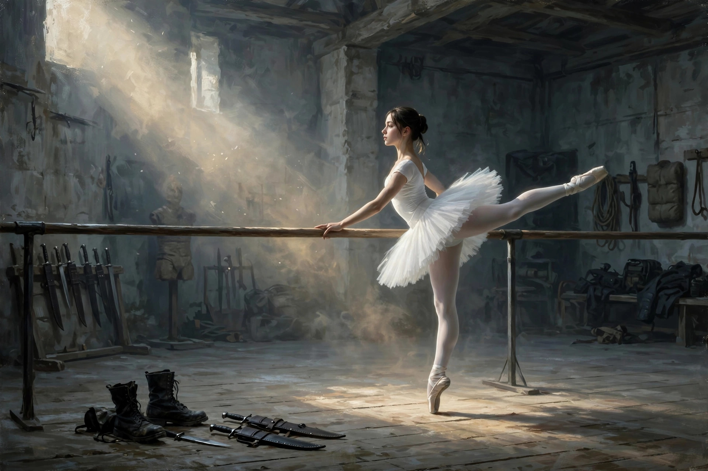
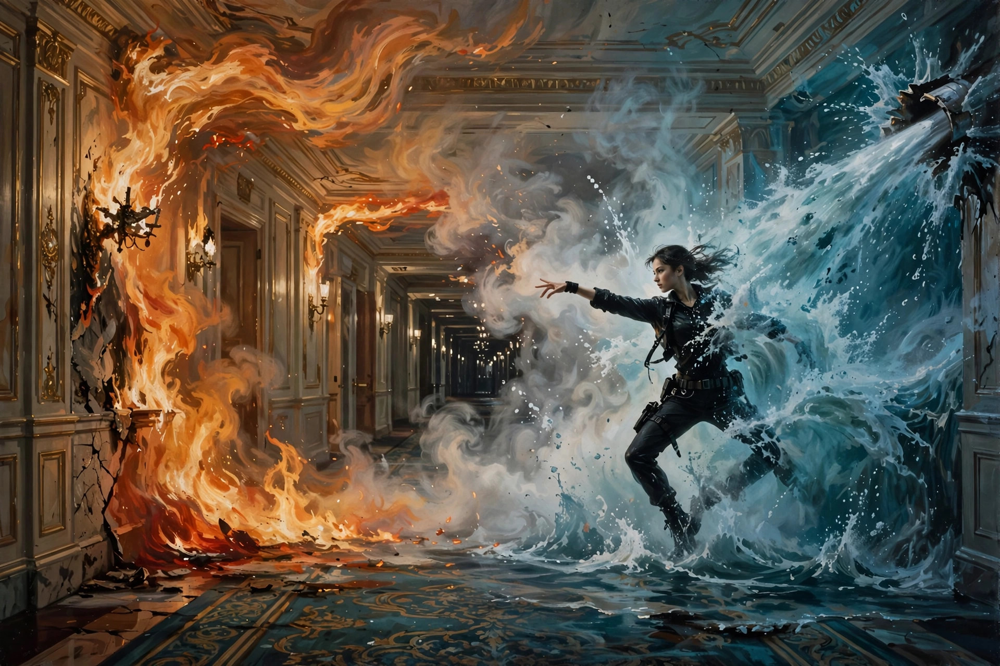

腥风血雨中的曼妙舞姿
昨天趁休假又去看了场电影，《疾速追杀——芭蕾杀姬》。听名字耳熟？那就对了，这的确是john wick宇宙的衍生剧。john wick本尊也在里面友情出演了，即为明证。

对不熟悉《疾速追杀》系列的朋友介绍下背景。这一系列的男主名叫John Wick，他隶属一个神秘的杀手组织，是组织里面最顶级的杀手之一。这个组织一旦加入基本没有退出的可能。但John Wick因为一次变故（已故爱妻的狗惨遭杀害），大杀四方，脱离组织。接下来一直遭到组织派出的各路杀手的追杀。在最新一部（第四部）中，John Wick在解决一个大boss后终于不幸倒下，标志着他这个系列的告一段落。
这一系列推出后广受好评，因为题材独特，简单概括就是极致的暴力美学。虽然每一部情节都极其简单，差不多都是一路过关斩将，但通过凌厉的贴身格斗和夸张的近距枪战，形成了独一无二的现代动作片风格。John Wick虽然倒下，但和他类似的其他杀手还是有故事可以挖的。最新这一部芭蕾杀姬就是一例。
下面谈谈观感，以下内容可能涉及剧透，没看的朋友谨慎。
影片延续了系列的典型风格，处于同一故事宇宙中，影片开始时间线应该是比疾速追杀1要早一点，也就是John Wick为小狗复仇大杀四方那次。
故事还是一如既往的简单。女主还是小女孩时和爸爸住在一个岛上的豪华别墅里。别墅戒备森严，有武装警卫。一天一伙全副武装的暴徒闯进别墅，杀了所有警卫，最后杀害了女孩的爸爸。这伙暴徒来自一个邪恶的杀手组织，负责执行这次刺杀任务的就是组织头目，也是女孩的外祖父，其女儿女婿都是这个组织的。女孩后来遇到一位好心的绅士（大陆酒店的经理），把她介绍给另一个杀手组织，也就是John Wick(江湖人称“巴巴雅嘎”)所在的那个。后面的内容就是讲女孩在组织里成长历练，成年后成为又一位顶尖杀手。然后通过多方查访找到杀害她父亲的杀手组织所在地，一举团灭该组织并手刃杀父仇人。中间巴巴雅嘎也友情出镜，并在关键时刻帮了女主一把。
这个系列说实话故事线都很弱。如果你是剧情党最好还是不要看这个系列，否则会失望。这个系列的看点就是极致近身格斗枪战带来的极致爽感。另外，看这个系列你最好也要忘掉逻辑和物理，因为你经常会看到有人在里面身中数刀甚至数抢而屹立不倒，从十多层楼掉下爬起来就可以继续加入战斗等等逆天场景。但所有这些都不影响不间断爽感给你带来的感官冲击。
最后，谈谈影片中几个令我印象深刻的片段。最让我惊艳的是女主和二号反派（大boss的亲信）的“水火”对决，特别有创意，视觉效果令人惊叹。具体就不剧透了。还有女主的飞刀出奇的准，有几个飞刀的场景令人叫绝，我愿称之为杀手界的“小李飞刀”。还有一个小惊喜就是行尸走肉中的重要人物“弩哥”（达里尔，抱歉忘了演员名字，角色太经典了），也在剧中出演一个配角。戏份不多，但也给人印象深刻。希望能在大银幕中更多地看到他，真的是个很有魅力的演员。

最后有个小吐槽，是关于“芭蕾”在此剧中的意义似乎只有片名，因为内容中仅在女主成长阶段出现过几个刻苦练习芭蕾舞的片段，似乎与故事主题毫无关联。我个人理解为，编导想制造一种强烈反差吧，一边是美好的身体和舞姿，一片是腥风血雨的杀戮。其实贯穿全片的柴可夫斯基的《天鹅湖》何尝不是起一样的作用呢？